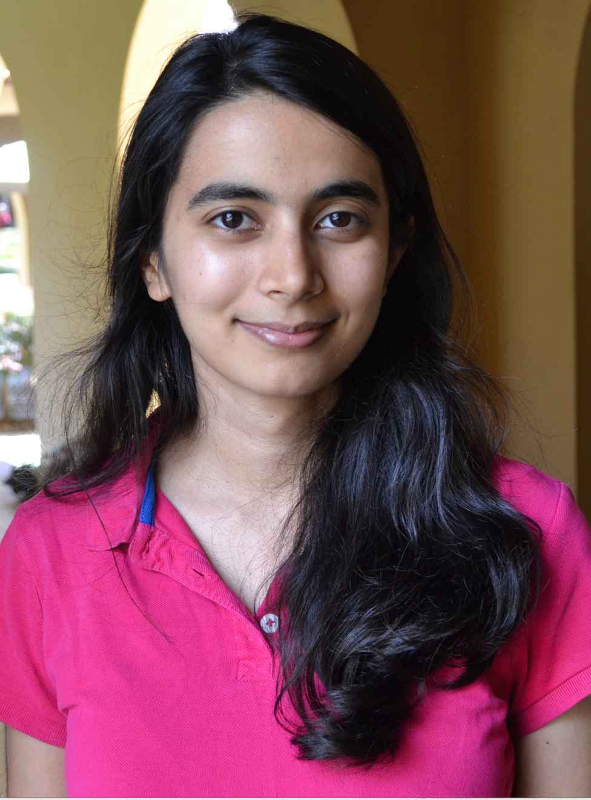

Avanti Shrikumar
In 2020-2022, I was a Ram and Vijay Shriram postdoctoral fellow in the Department of Earth System Science at Stanford, where I worked with Professor Karen Casciotti on computational methods for oceanographic data analysis. During my postdoc, I developed pyOMPA, an improved method for performing water mass mixing analysis. I received my PhD from the Department of Computer Science at Stanford, advised by Professor Anshul Kundaje. During my PhD, I developed methods to make deep learning models interpretable, and applied these methods to study regulatory genomics. In order of my excitement, my PhD projects were:

- TF-MoDISco, a method that leverages input-level importance scores produced by deep learning models or SVMs to reveal recurring patterns in genomic data.
- DeepLIFT, a computationally efficient method for generating input-level importance scores to explain individual predictions made by a deep learning model.
- GkmExplain, a computationally efficient method for generating input-level importance scores to explain individual predictions made by nonlinear gapped-kmer support vector machines.
- Adapting to label shift with Bias-Corrected Calibration, where we show that performing domain adaptation to label shift using a combination of maximum likelihood estimation and specific types of bias-corrected calibration gives state-of-the-art results at domain adaptation to label shift.
- A Flexible and Adaptive Framework for Abstention under Class Imbalance: a general method for deciding which examples a predictive model should abstain on to optimize metrics other than standard classification accuracy (which is often not very useful when there is class imbalance).
- A novel strategy for determining when featured interactions learned by a neural network might be false positives, based on looking at the impact that the learned interaction has on the model's prediction loss on held-out data
- Separable fully-connected layers, a novel architectural component for deep learning models that takes advantage of recurring positional patterns in genomic data.
- Reverse-complement parameter sharing, a novel architectural component for deep learning models that takes advantage of symmetries induced by the double-stranded nature of DNA.
- simDNA, a package for generating simulated regulatory genomic sequences.
I have a Bachelor's in Computer Science with Molecular Biology from MIT and spent a year working as a developer for the Healthcare team of Palantir Technologies before starting my PhD.